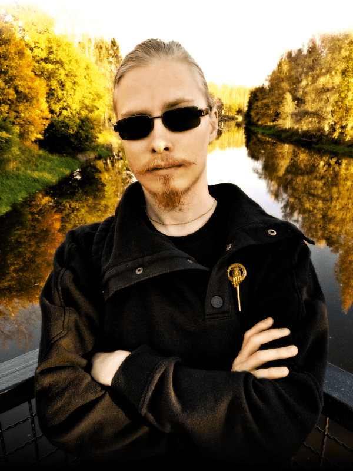

My name is Joni Puljujärvi, and I am a mathematics student at the University of
Helsinki. Well, I am quite many things, to be fair, such as a Finnish language planner, a
hobbyist linguist, a musician, a philosopher and a web designer — and, of course, a friend
of both science and art.
In mathematics, my more specific interests lie mostly on logic and set theory, which can be
viewed as the foundations of all modern mathematics. My minor subjects are computer science and
theoretical philosophy. In addition, I am greatly interested in theoretical physics and
linguistics (and a bit of everything else, as well, I suppose).

As one of my hobbies, I compose music under the name of
Crudelis Diabolus. I am also into
literature, especially science fiction and fantasy genres. Along with reading, I also write
quite a lot; I am in the middle of writing a black-humoured sci-fi piece called
Jumalaton näytelmä (finnish for “Undivine Comedy”, literally “A
Godless
Drama” or “The Profane Comedy”). I am also a part of the writing team of
Klaanon, an ongoing multiauthored multimedia
story, with more than one Bible worth of text in it.
Video games are an important thing to mention among my hobbies, although playing them is
something I do not have that much time for nowadays. I have composed several songs for games
made by a friend of mine, Ville “Nanofus” Talonpoika.
It happens to be that I consider myself also a web designer. This portfolio page I built using
HTML5, CSS3 and a tiny bit of JavaScript.
Below you can find theses, esseys and other (scientific) texts written by me. Most of them are about
mathematics. Texts where I speak out about things a bit more can be found on my
WordPress blog (in
Finnish).
In 2013, I took part in the National Novel Writing Month, where one
is supposed to write a novel in a month — more precisely, 50 000 words in 30 days. So, on November
2013, I started to write a novel called Jumalaton näytelmä (the name is Finnish for
“Undivine Comedy”, a reference to Dante’s Divine Comedy). I did manage to
write a couple of chapters, 6 262 words. Of course, it was a failure as a NaNoWriMo novel but a great
start for a fine story.
When the whole world is on the top of both its degeneration and its glory and there are deities
everywhere, it is hardly possible to avoid havoc — and it is all an undivine comedy.
When the infamous Anomaly hears of someone trying to get their hands on the keys of almightyness, he
has no other option than to engage in messing up this someone’s plan; the last time
almightyness was involved in anything, the whole Solar System was on the brink of destruction.
I have neither forgotten nor forsaken the project but I am going to continue writing whenever some
inspiration emerges.
Klaanon (or Clanon in English) is a long-term story project of mine — and from 15
to 20 other writers’. During the years, it has swollen into size of thousands of A4-sized pages.
Writing Klaanon started out as a text roleplay game but eventually evolved rather into writing
a multi-authored novel than playing an RPG. The evolution did not stop there, though; it would be an
understatement to say Klaanon is just a novel. First, it has the length of a full-sized series of
novels,
so, if it ever were to be printed into a physical form, we would get more than just one Bible-sized book
of this stuff. Second, Klaanon has become more of a multimedia project. For instance, a chapter that was
called Profeetan valtakunta (Finnish for Kingdom of the Prophet) was a collection of,
in addition to the text and illustration, a video game and cutscene videos. The release was also
actually
printed as a real physical illustrated book (for our own amusement only).
Music
I create relatively eccentric music under the name of Crudelis Diabolus. My
style varies and wanders so vaguely on a variety of genres that I do not even try to describe it, but
instead give you an example, for which purpose my track Arachnosphere suits just fine.
More information about this pastime activity and the sonic strangeness (and beauty, if I
may be so bold) is available at crudelisdiabolus.com.
I have also scored a few video games made by friends of mine, as well as a surreal children’s show
called Barry the Meat Plane,
created by Santeri Laasanen.
For released albums, see my Bandcamp. For individual
tracks not included in any released compilation, and for WIP tracks, see my
SoundCloud.
Websites
I have been involved, in one way or another, with the creation or administration of many websites. My
contributions vary from the complete writing of the whole source code to designing the outfit of the
website, and administration.
This portfolio page is written in standard HTML5, CSS3 and a tiny smidge of JavaScript. Generally, I aim
at writing pure valid HTML whenever I design a website.
The website of Tmi Jouni Puljujärvi, a private entrepreneur that offers various services, including but
not limited to organizing hiking trips to the wilderness of Finnish Lapland for small groups.
Web design, graphical interface, administration, texts
A website, dedicated to a cult classic video game called Pekka Kana 2 (”Pekka the Rooster 2”),
that hosts custom game levels created by fans of the original game. After the game developer released
the source code, members of PK2Lib are trying to develop a modern version of their favourite jump
’n’ run, for many different platforms.
Even though I describe my graphical creations as “gaphics abuse”, there is
surprisingly much of image manipulation and graphical design and whatnot that I actually do (mostly for
myself). So far the cover art of every music release by Crudelis Diabolus has been created by myself
(with some additional input from actual artists). In addition, there is some pixel art presented on this
page. Links to websites whose graphical outfit I have been designing can be found (if you are looking
for that sort of thing) most likely by taking a look at the ”Websites” section of this page.
Album Covers
Pixel Art
Photo manipulation
Frequently Asked Questions
Question:Puljujärvi sounds familiar. Are you related to that ice hockey guy, Jesse Puljujärvi?
Answer: Aren’t we all related? But yes, I guess you wanted to know that he is my fourth cousin.